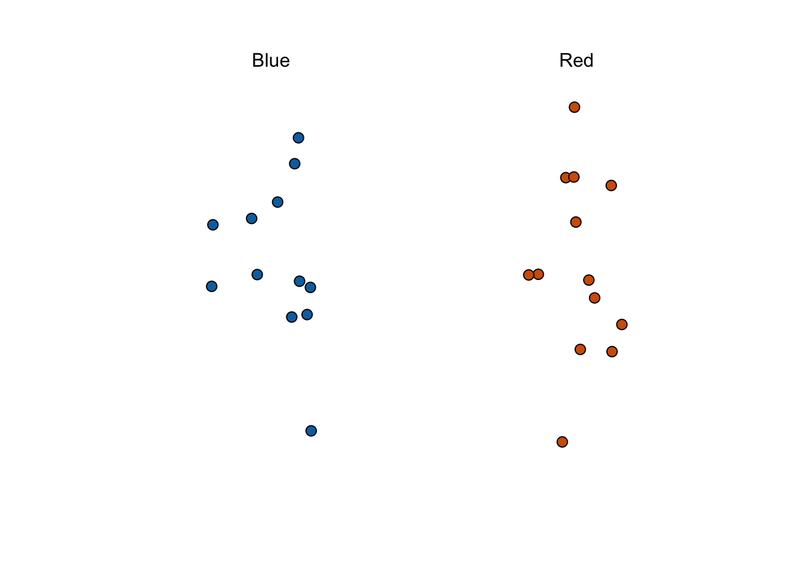
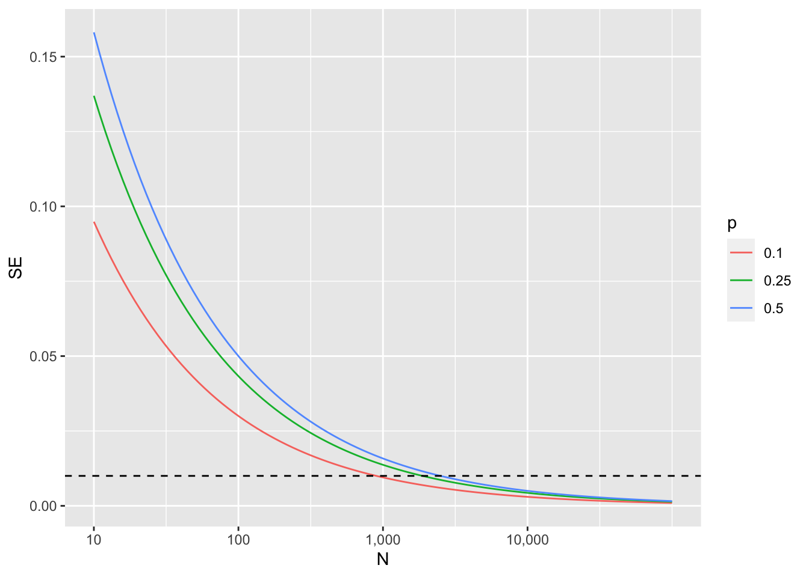
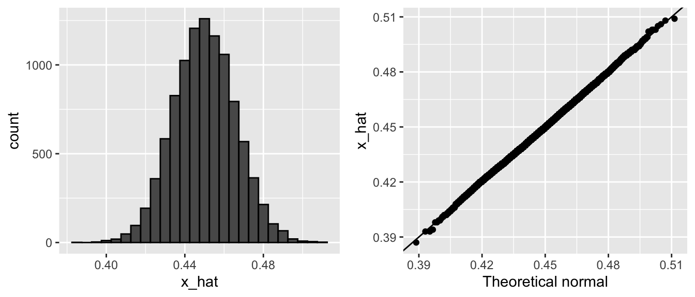
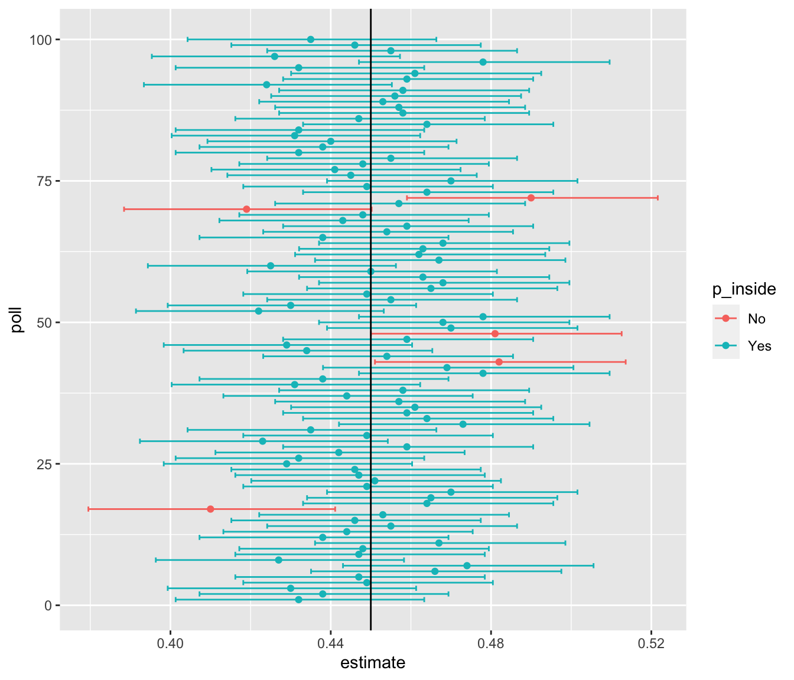

| Poll | Date | Sample | MoE | Clinton | Trump | Spread |
|---|---|---|---|---|---|---|
| RCP Average | 10/31 - 11/7 | -- | -- | 47.2 | 44.3 | Clinton +2.9 |
| Bloomberg | 11/4 - 11/6 | 799 LV | 3.5 | 46.0 | 43.0 | Clinton +3 |
| Economist | 11/4 - 11/7 | 3669 LV | -- | 49.0 | 45.0 | Clinton +4 |
| IBD | 11/3 - 11/6 | 1026 LV | 3.1 | 43.0 | 42.0 | Clinton +1 |
| ABC | 11/3 - 11/6 | 2220 LV | 2.5 | 49.0 | 46.0 | Clinton +3 |
| FOX News | 11/3 - 11/6 | 1295 LV | 2.5 | 48.0 | 44.0 | Clinton +4 |
| Monmouth | 11/3 - 11/6 | 748 LV | 3.6 | 50.0 | 44.0 | Clinton +6 |
| CBS News | 11/2 - 11/6 | 1426 LV | 3.0 | 47.0 | 43.0 | Clinton +4 |
| LA Times | 10/31 - 11/6 | 2935 LV | 4.5 | 43.0 | 48.0 | Trump +5 |
| NBC News | 11/3 - 11/5 | 1282 LV | 2.7 | 48.0 | 43.0 | Clinton +5 |
| NBC News | 10/31 - 11/6 | 30145 LV | 1.0 | 51.0 | 44.0 | Clinton +7 |
| McClatchy | 11/1 - 11/3 | 940 LV | 3.2 | 46.0 | 44.0 | Clinton +2 |
| Reuters | 10/31 - 11/4 | 2244 LV | 2.2 | 44.0 | 40.0 | Clinton +4 |
| GravisGravis | 10/31 - 10/31 | 5360 RV | 1.3 | 50.0 | 50.0 | Tie |
18 Inference
The day before the 2008 presidential election, Nate Silver’s FiveThirtyEight stated that
Barack Obama appears poised for a decisive electoral victory.
They went further and predicted that Obama would win the election with 349 electoral votes to 189, and the popular vote by a margin of 6.1%. FiveThirtyEight also attached a probabilistic statement to their prediction claiming that Obama had a 91% chance of winning the election.
Political commentator Joe Scarborough said during his show
Anybody that thinks that this race is anything but a toss-up right now is such an ideologue … they’re jokes.
To which Nate Silver responded via Twitter:
If you think it’s a toss-up, let’s bet. If Obama wins, you donate $1,000 to the American Red Cross. If Romney wins, I do. Deal?
In 2016, Silver was not as certain and gave Hillary Clinton only a 71% of winning. In contrast, many other forecasters were almost certain she would win. She lost. But 71% is still more than 50%, so was Mr. Silver wrong? And what does probability mean in this context anyway? Are dice being tossed or cards being dealt somewhere?
18.1 Parameters and Estimates
Real Clear Politics is an example of a news aggregator that organizes and publishes poll results. For example, they present the following poll results reporting estimates of the popular vote for the 2016 presidential election
Let’s make some observations about the table above.
- Different polls, all taken days before the election, report a different spread
- Clinton won the popular vote by 2.1%.
- We also see a column titled MoE which stands for margin of error.
18.2 Predict percents competition
What percent of the beads are red?

Rules:
- Winners gets a $25 gift certificate
- Provide an estimate and an interval.
- If the true percent is not in the interval you are eliminated
- Smallest interval wins.
- You can take a sample (with replacement) from the urn.
- It costs you $0.10 per each bead you sample. Example: if your sample size is 250, and you win, you will break even since you will pay $25 to collect your $25 prize.
The dslabs package includes a function that shows a random draw from this urn:

18.3 Populations, samples, parameters, and estimates
We want to predict the proportion of red beads in the urn. Let’s call this quantity \(p\), which then tells us the proportion of blue beads \(1-p\), and the spread \(p - (1-p)\), which simplifies to \(2p - 1\).
In statistical textbooks:
- the beads in the urn are called the population.
- The proportion of red beads in the population \(p\) is called a parameter.
- The 25 beads we see in the previous plot are called a sample.
The task of statistical inference is to predict the parameter \(p\) using the observed data in the sample.
18.4 The sample average
\[\bar{X} = \frac{1}{N} \sum_{i=1}^N X_i\]
Has some desirable properties:
\[ \mbox{E}(\bar{X}) = p \]
\[ \mbox{SE}(\bar{X}) = \sqrt{p(1-p)/N} \]
This result reveals the power of polls. The expected value of the sample proportion \(\bar{X}\) is the parameter of interest \(p\) and we can make the standard error as small as we want by increasing \(N\). The law of large numbers tells us that with a large enough poll, our estimate converges to \(p\).
Here is the standard error for \(p=.25, .5,\) and \(0.75\):

From the plot we see that we would need a very large polls to get the standarr error below 1%.
But there is one more very useful property based on CLT:
\[ \bar{X} \sim \mbox{Normal}\left(p, \sqrt{p(1-p)/N}\right) \]
18.5 CLT in practice
Now we can ask a more practical questions such as what is the probability that our estimate is within 1% of the actual \(p\). We can write it like this and actually use CLT to answer the question:
\[ \mbox{Pr}(| \bar{X} - p| \leq .01) \]
which is the same as:
\[ \mbox{Pr}(\bar{X} - p\leq .01) - \mbox{Pr}(\bar{X} - p \leq - .01) \]
we standardize \(\bar{X}\) to get a approximately standard normal \(Z\):
\[ \mbox{Pr}\left(Z \leq \frac{ \,.01} {\mbox{SE}(\bar{X})} \right) - \mbox{Pr}\left(Z \leq - \frac{ \,.01} {\mbox{SE}(\bar{X})} \right) \]
We are almost ready to get a number except since we don’t know \(p\), we don’t know \(\mbox{SE}(\bar{X})\).
But it turns out that the CLT still works if we estimate the standard error by using \(\bar{X}\) in place of \(p\). We say that we plug-in the estimate. Our estimate of the standard error is therefore:
\[ \hat{\mbox{SE}}(\bar{X})=\sqrt{\bar{X}(1-\bar{X})/N} \]
Now we continue with our calculation, but dividing by \(\hat{\mbox{SE}}(\bar{X})=\sqrt{\bar{X}(1-\bar{X})/N})\) instead. In our first sample we had 12 blue and 13 red so \(\bar{X} = 0.52\) and our estimate of standard error is:
x_hat <- 0.52
se <- sqrt(x_hat*(1 - x_hat)/25)
se[1] 0.09991997And now we can answer the question of the probability of being close to \(p\). The answer is:
pnorm(0.01/se) - pnorm(-0.01/se)[1] 0.07971926Earlier we mentioned the margin of error. Now we can define it because it is simply two times the standard error, which we can now estimate. In our case it is:
1.96*se[1] 0.1958431Why do we multiply by \(1.96 \hat{\mbox{SE}}(\bar{X})\)? Because if you ask what is the probability that we are within 1.96 standard errors from \(p\), we get:
\[ \mbox{Pr}\left(Z \leq \, 1.96\,\hat{\mbox{SE}}(\bar{X}) / \hat{\mbox{SE}}(\bar{X}) \right) - \mbox{Pr}\left(Z \leq - 1.96\, \hat{\mbox{SE}}(\bar{X}) / \hat{\mbox{SE}}(\bar{X}) \right) \]
which is:
\[ \mbox{Pr}\left(Z \leq 1.96 \right) - \mbox{Pr}\left(Z \leq - 1.96\right) \]
which we know is about 95%:
pnorm(1.96) - pnorm(-1.96)[1] 0.9500042Hence, there is a 95% probability that \(\bar{X}\) will be within \(1.96\times \hat{SE}(\bar{X})\), in our case within about 0.2, of \(p\). Note that 95% is somewhat of an arbitrary choice and sometimes other percentages are used, but it is the most commonly used value to define margin of error. We often round 1.96 up to 2 for simplicity of presentation.
In summary, the CLT tells us that our poll based on a sample size of \(25\) is not very useful. We don’t really learn much when the margin of error is this large. All we can really say is that the popular vote will not be won by a large margin. This is why pollsters tend to use larger sample sizes.
18.5.1 A Monte Carlo simulation
Suppose we want to use a Monte Carlo simulation to corroborate the tools we have built using probability theory. To create the simulation, we would write code like this:
B <- 10000
N <- 1000
p <- 0.45
x_hat <- replicate(B, {
x <- sample(c(0,1), size = N, replace = TRUE, prob = c(1-p, p))
mean(x)
})The problem is, of course, we don’t know p. We could construct an urn like the one pictured above and run an analog (without a computer) simulation. It would take a long time, but you could take 10,000 samples, count the beads and keep track of the proportions of blue. We can use the function take_poll(n=1000) instead of drawing from an actual urn, but it would still take time to count the beads and enter the results.
One thing we therefore do to corroborate theoretical results is to pick one or several values of p and run the simulations. Let’s set p=0.45. We can then simulate a poll:
p <- 0.45
N <- 1000
x <- sample(c(0, 1), size = N, replace = TRUE, prob = c(1 - p, p))
x_hat <- mean(x)In this particular sample, our estimate is x_hat. We can use that code to do a Monte Carlo simulation:
B <- 10000
x_hat <- replicate(B, {
x <- sample(c(0, 1), size = N, replace = TRUE, prob = c(1 - p, p))
mean(x)
})To review, the theory tells us that \(\bar{X}\) is approximately normally distributed, has expected value \(p=\) 0.45 and standard error \(\sqrt{p(1-p)/N}\) = 0.0157321. The simulation confirms this:
mean(x_hat)[1] 0.4500729mean((x_hat-mean(x_hat))^2)[1] 0.0002484474A histogram and qq-plot confirm that the normal approximation is accurate as well:

Of course, in real life we would never be able to run such an experiment because we don’t know \(p\). But we could run it for various values of \(p\) and \(N\) and see that the theory does indeed work well for most values. You can easily do this by re-running the code above after changing p and N.
18.6 Confidence intervals
We want to know the probability that the interval
\[ [\bar{X} - 1.96\hat{\mbox{SE}}(\bar{X}), \bar{X} + 1.96\hat{\mbox{SE}}(\bar{X})] \]
contains the true proportion \(p\). First, consider that the start and end of these intervals are random variables: every time we take a sample, they change. To illustrate this, run the Monte Carlo simulation above twice. We use the same parameters as above:
p <- 0.45
N <- 1000And notice that the interval here:
x <- sample(c(0, 1), size = N, replace = TRUE, prob = c(1 - p, p))
x_hat <- mean(x)
se_hat <- sqrt(x_hat * (1 - x_hat) / N)
x_hat + c(-1, 1)*se_hat * 1.96[1] 0.4420549 0.5039451is different from this one:
x <- sample(c(0, 1), size = N, replace = TRUE, prob = c(1 - p, p))
x_hat <- mean(x)
se_hat <- sqrt(x_hat * (1 - x_hat) / N)
c(x_hat - 1.96 * se_hat, x_hat + 1.96 * se_hat)[1] 0.3993149 0.4606851Keep sampling and creating intervals and you will see the random variation.
To determine the probability that the interval includes \(p\), we need to compute this:
\[ \mbox{Pr}\left(\bar{X} - 1.96\hat{\mbox{SE}}(\bar{X}) \leq p \leq \bar{X} + 1.96\hat{\mbox{SE}}(\bar{X})\right) \]
By subtracting and dividing the same quantities in all parts of the equation, we get that the above is equivalent to:
\[ \mbox{Pr}\left(-1.96 \leq \frac{\bar{X}- p}{\hat{\mbox{SE}}(\bar{X})} \leq 1.96\right) \]
The term in the middle is an approximately normal random variable with expected value 0 and standard error 1, which we have been denoting with \(Z\), so we have:
\[ \mbox{Pr}\left(-1.96 \leq Z \leq 1.96\right) \]
which we can quickly compute using :
pnorm(1.96) - pnorm(-1.96)[1] 0.9500042proving that we have a 95% probability.
If we want to have a larger probability, say 99%, we need to multiply by whatever z satisfies the following:
\[ \mbox{Pr}\left(-z \leq Z \leq z\right) = 0.99 \]
Using:
z <- qnorm(0.995)
z[1] 2.575829will achieve this because by definition pnorm(qnorm(0.995)) is 0.995 and by symmetry pnorm(1-qnorm(0.995)) is 1 - 0.995. As a consequence, we have that:
pnorm(z) - pnorm(-z)[1] 0.99is 0.995 - 0.005 = 0.99.
We can use this approach for any probability, not just 0.95 and 0.99. In statistics textbooks, these are usually written for any probability as \(1-\alpha\). We can then obtain the \(z\) for the equation above noting using z = qnorm(1 - alpha / 2) because \(1 - \alpha/2 - \alpha/2 = 1 - \alpha\).
So, for example, for \(\alpha=0.05\), \(1 - \alpha/2 = 0.975\) and we get the 1.96 we have been using:
qnorm(0.975)[1] 1.95996418.6.1 A Monte Carlo simulation
We can run a Monte Carlo simulation to confirm that, in fact, a 95% confidence interval includes \(p\) 95% of the time.
N <- 1000
B <- 10000
inside <- replicate(B, {
x <- sample(c(0, 1), size = N, replace = TRUE, prob = c(1 - p, p))
x_hat <- mean(x)
se_hat <- sqrt(x_hat * (1 - x_hat) / N)
between(p, x_hat - 1.96 * se_hat, x_hat + 1.96 * se_hat)
})
mean(inside)[1] 0.9482The following plot shows the first 100 confidence intervals. In this case, we created the simulation so the black line denotes the parameter we are trying to estimate:

18.7 Exercises
Write a line of code that gives you the standard error
sefor the proportion of red beads for several values of \(p\), specifically forp <- seq(0, 1, length = 100). Make a plot ofseversusp.If we are interested in the difference in proportions, \(\mu = p - (1-p)\), our estimate is \(\hat{\mu} = \bar{X} - (1-\bar{X})\) expected value and SE of \(\hat{\mu}\).
If the actual \(p=.45\), it means the Republicans are winning by a relatively large margin since \(\mu = -.1\), which is a 10% margin of victory. In this case, what is the standard error of \(2\hat{X}-1\) if we take a sample of \(N=25\)?
Given the answer to 9, which of the following best describes your strategy of using a sample size of \(N=25\)?
- The expected value of our estimate \(2\bar{X}-1\) is \(\mu\), so our prediction will be right on.
- Our standard error is larger than the difference, so the chances of \(2\bar{X}-1\) being positive and throwing us off were not that small. We should pick a larger sample size.
- The difference is 10% and the standard error is about 0.2, therefore much smaller than the difference.
- Because we don’t know \(p\), we have no way of knowing that making \(N\) larger would actually improve our standard error.
For the next exercises, we will use actual polls from the 2016 election. You can load the data from the dslabs package.
library(dslabs)Specifically, we will use all the national polls that ended within one week before the election.
library(tidyverse)
polls <- polls_us_election_2016 |>
filter(enddate >= "2016-10-31" & state == "U.S.") - For the first poll, you can obtain the samples size and estimated Clinton percentage with:
N <- polls$samplesize[1]
x_hat <- polls$rawpoll_clinton[1]/100Assume there are only two candidates and construct a 95% confidence interval for the election night proportion \(p\).
Now use
dplyrto add a confidence interval as two columns, call themlowerandupper, to the objectpoll. Then useselectto show thepollster,enddate,x_hat,lower,uppervariables. Hint: define temporary columnsx_hatandse_hat.The final tally for the popular vote was Clinton 48.2% and Trump 46.1%. Add a column, call it
hit, to the previous table stating if the confidence interval included the true proportion \(p=0.482\) or not.For the table you just created, what proportion of confidence intervals included \(p\)?
If these confidence intervals are constructed correctly, and the theory holds up, what proportion should include \(p\)?
(@). A much smaller proportion of the polls than expected produce confidence intervals containing \(p\). If you look closely at the table, you will see that most polls that fail to include \(p\) are underestimating. The reason for this is undecided voters, individuals polled that do not yet know who they will vote for or do not want to say. Because, historically, undecideds divide evenly between the two main candidates on election day, it is more informative to estimate the spread or the difference between the proportion of two candidates \(\mu\), which in this election was \(0. 482 - 0.461 = 0.021\). Assume that there are only two parties and that \(\mu = 2p - 1\), redefine polls as below and re-do exercise 1, but for the difference.
polls <- polls_us_election_2016 |>
filter(enddate >= "2016-10-31" & state == "U.S.") |>
mutate(mu_hat = rawpoll_clinton / 100 - rawpoll_trump / 100)- Now recalculate confidence interavls for the difference and see how often the polls include the election night difference of 0.21.
polls |> mutate(p = (mu_hat + 1)/2, se = 2*sqrt(p*(1-p))/sqrt(samplesize)) |>
mutate(lower = mu_hat - 1.96*se, upper = mu_hat + 1.96*se) state startdate enddate
1 U.S. 2016-11-03 2016-11-06
2 U.S. 2016-11-01 2016-11-07
3 U.S. 2016-11-02 2016-11-06
4 U.S. 2016-11-04 2016-11-07
5 U.S. 2016-11-03 2016-11-06
6 U.S. 2016-11-03 2016-11-06
7 U.S. 2016-11-02 2016-11-06
8 U.S. 2016-11-03 2016-11-05
9 U.S. 2016-11-04 2016-11-07
10 U.S. 2016-11-04 2016-11-06
11 U.S. 2016-11-01 2016-11-04
12 U.S. 2016-11-03 2016-11-06
13 U.S. 2016-11-01 2016-11-03
14 U.S. 2016-11-05 2016-11-07
15 U.S. 2016-11-01 2016-11-07
16 U.S. 2016-11-01 2016-11-05
17 U.S. 2016-10-31 2016-11-06
18 U.S. 2016-11-04 2016-11-05
19 U.S. 2016-10-31 2016-11-06
20 U.S. 2016-11-02 2016-11-06
21 U.S. 2016-11-04 2016-11-07
22 U.S. 2016-10-20 2016-11-01
23 U.S. 2016-11-01 2016-11-03
24 U.S. 2016-10-28 2016-11-01
25 U.S. 2016-11-02 2016-11-05
26 U.S. 2016-10-31 2016-11-04
27 U.S. 2016-11-01 2016-11-04
28 U.S. 2016-10-04 2016-11-06
29 U.S. 2016-11-03 2016-11-06
30 U.S. 2016-10-31 2016-11-03
31 U.S. 2016-10-30 2016-11-03
32 U.S. 2016-11-02 2016-11-05
33 U.S. 2016-10-30 2016-11-02
34 U.S. 2016-10-29 2016-11-01
35 U.S. 2016-10-28 2016-10-31
36 U.S. 2016-10-30 2016-11-03
37 U.S. 2016-11-01 2016-11-04
38 U.S. 2016-10-30 2016-11-01
39 U.S. 2016-10-26 2016-10-31
40 U.S. 2016-10-29 2016-11-02
41 U.S. 2016-11-01 2016-11-03
42 U.S. 2016-11-04 2016-11-06
43 U.S. 2016-10-28 2016-11-01
44 U.S. 2016-10-29 2016-11-02
45 U.S. 2016-10-28 2016-11-01
46 U.S. 2016-10-31 2016-11-02
47 U.S. 2016-10-27 2016-10-31
48 U.S. 2016-11-03 2016-11-05
49 U.S. 2016-10-27 2016-10-31
50 U.S. 2016-10-25 2016-10-31
51 U.S. 2016-10-30 2016-11-05
52 U.S. 2016-10-30 2016-11-01
53 U.S. 2016-10-29 2016-11-04
54 U.S. 2016-11-02 2016-11-04
55 U.S. 2016-10-31 2016-11-06
56 U.S. 2016-10-28 2016-11-03
57 U.S. 2016-11-01 2016-11-03
58 U.S. 2016-10-30 2016-11-05
59 U.S. 2016-10-27 2016-11-02
60 U.S. 2016-10-29 2016-11-04
61 U.S. 2016-10-26 2016-11-01
62 U.S. 2016-10-31 2016-11-02
63 U.S. 2016-10-31 2016-10-31
64 U.S. 2016-10-28 2016-11-03
65 U.S. 2016-10-30 2016-11-01
66 U.S. 2016-10-27 2016-11-02
67 U.S. 2016-11-01 2016-11-02
68 U.S. 2016-10-26 2016-11-01
69 U.S. 2016-10-29 2016-10-31
70 U.S. 2016-10-25 2016-10-31
pollster grade samplesize
1 ABC News/Washington Post A+ 2220
2 Google Consumer Surveys B 26574
3 Ipsos A- 2195
4 YouGov B 3677
5 Gravis Marketing B- 16639
6 Fox News/Anderson Robbins Research/Shaw & Company Research A 1295
7 CBS News/New York Times A- 1426
8 NBC News/Wall Street Journal A- 1282
9 IBD/TIPP A- 1107
10 Selzer & Company A+ 799
11 Angus Reid Global A- 1151
12 Monmouth University A+ 748
13 Marist College A 940
14 The Times-Picayune/Lucid <NA> 2521
15 USC Dornsife/LA Times <NA> 2972
16 RKM Research and Communications, Inc. B+ 1009
17 CVOTER International C+ 1625
18 Morning Consult <NA> 1482
19 SurveyMonkey C- 70194
20 Rasmussen Reports/Pulse Opinion Research C+ 1500
21 Insights West <NA> 940
22 RAND (American Life Panel) B- 2269
23 Fox News/Anderson Robbins Research/Shaw & Company Research A 1107
24 CBS News/New York Times A- 927
25 ABC News/Washington Post A+ 1937
26 Ipsos A- 2244
27 ABC News/Washington Post A+ 1685
28 YouGov B 84292
29 IBD/TIPP A- 1026
30 ABC News/Washington Post A+ 1419
31 IBD/TIPP A- 898
32 IBD/TIPP A- 903
33 ABC News/Washington Post A+ 1151
34 ABC News/Washington Post A+ 1167
35 ABC News/Washington Post A+ 1182
36 Ipsos A- 2021
37 IBD/TIPP A- 804
38 YouGov B 1233
39 IBD/TIPP A- 1018
40 Ipsos A- 1922
41 Rasmussen Reports/Pulse Opinion Research C+ 1500
42 The Times-Picayune/Lucid <NA> 2584
43 Ipsos A- 1772
44 IBD/TIPP A- 867
45 IBD/TIPP A- 862
46 Rasmussen Reports/Pulse Opinion Research C+ 1500
47 Ipsos A- 1464
48 The Times-Picayune/Lucid <NA> 2526
49 Rasmussen Reports/Pulse Opinion Research C+ 1500
50 Google Consumer Surveys B 24316
51 CVOTER International C+ 1572
52 Rasmussen Reports/Pulse Opinion Research C+ 1500
53 CVOTER International C+ 1479
54 The Times-Picayune/Lucid <NA> 2561
55 USC Dornsife/LA Times <NA> 2935
56 CVOTER International C+ 1395
57 The Times-Picayune/Lucid <NA> 2627
58 USC Dornsife/LA Times <NA> 2988
59 CVOTER International C+ 1329
60 USC Dornsife/LA Times <NA> 2987
61 CVOTER International C+ 1383
62 The Times-Picayune/Lucid <NA> 2620
63 Gravis Marketing B- 5360
64 USC Dornsife/LA Times <NA> 2962
65 The Times-Picayune/Lucid <NA> 2617
66 USC Dornsife/LA Times <NA> 2938
67 Gravis Marketing B- 2435
68 USC Dornsife/LA Times <NA> 3004
69 The Times-Picayune/Lucid <NA> 2600
70 USC Dornsife/LA Times <NA> 3145
population rawpoll_clinton rawpoll_trump rawpoll_johnson rawpoll_mcmullin
1 lv 47.00 43.00 4.00 NA
2 lv 38.03 35.69 5.46 NA
3 lv 42.00 39.00 6.00 NA
4 lv 45.00 41.00 5.00 NA
5 rv 47.00 43.00 3.00 NA
6 lv 48.00 44.00 3.00 NA
7 lv 45.00 41.00 5.00 NA
8 lv 44.00 40.00 6.00 NA
9 lv 41.20 42.70 7.10 NA
10 lv 44.00 41.00 4.00 NA
11 lv 48.00 44.00 6.00 NA
12 lv 50.00 44.00 4.00 NA
13 lv 44.00 43.00 6.00 NA
14 lv 45.00 40.00 5.00 NA
15 lv 43.61 46.84 NA NA
16 lv 47.60 44.40 4.30 NA
17 lv 48.91 46.13 NA NA
18 lv 45.00 42.00 8.00 NA
19 lv 47.00 41.00 6.00 NA
20 lv 45.00 43.00 4.00 NA
21 lv 49.00 45.00 4.00 NA
22 lv 43.70 34.60 7.70 NA
23 lv 45.50 44.00 5.00 NA
24 lv 45.00 42.00 5.00 NA
25 lv 47.00 43.00 4.00 NA
26 lv 43.00 39.00 6.00 NA
27 lv 48.00 43.00 4.00 NA
28 lv 42.90 39.00 4.70 NA
29 lv 40.70 43.10 6.30 NA
30 lv 47.00 43.00 4.00 NA
31 lv 44.40 43.90 3.70 NA
32 lv 43.00 44.00 5.00 NA
33 lv 47.00 44.00 3.00 NA
34 lv 47.00 45.00 3.00 NA
35 lv 46.00 46.00 3.00 NA
36 lv 43.20 38.30 5.90 NA
37 lv 44.20 43.70 4.80 NA
38 lv 46.00 43.00 4.00 NA
39 lv 44.60 43.70 4.20 NA
40 lv 45.50 37.30 5.40 NA
41 lv 44.00 44.00 4.00 NA
42 lv 45.00 40.00 5.00 NA
43 lv 44.70 37.40 5.30 NA
44 lv 44.00 44.10 3.90 NA
45 lv 44.00 44.40 4.10 NA
46 lv 42.00 45.00 4.00 NA
47 lv 44.00 37.20 5.90 NA
48 lv 45.00 40.00 5.00 NA
49 lv 44.00 44.00 5.00 NA
50 lv 37.69 35.07 6.18 NA
51 lv 49.25 45.92 NA NA
52 lv 44.00 44.00 5.00 NA
53 lv 49.06 47.82 NA NA
54 lv 45.00 39.00 5.00 NA
55 lv 43.23 47.98 NA NA
56 lv 48.53 48.44 NA NA
57 lv 44.00 39.00 6.00 NA
58 lv 42.63 48.16 NA NA
59 lv 48.78 48.22 NA NA
60 lv 42.56 47.96 NA NA
61 lv 48.81 48.14 NA NA
62 lv 44.00 39.00 6.00 NA
63 rv 46.00 45.00 4.00 NA
64 lv 43.38 46.89 NA NA
65 lv 43.00 40.00 6.00 NA
66 lv 42.47 47.50 NA NA
67 rv 47.00 45.00 3.00 NA
68 lv 42.36 47.83 NA NA
69 lv 42.00 40.00 5.00 NA
70 lv 43.28 46.90 NA NA
adjpoll_clinton adjpoll_trump adjpoll_johnson adjpoll_mcmullin mu_hat
1 45.20163 41.72430 4.626221 NA 0.0400
2 43.34557 41.21439 5.175792 NA 0.0234
3 42.02638 38.81620 6.844734 NA 0.0300
4 45.65676 40.92004 6.069454 NA 0.0400
5 46.84089 42.33184 3.726098 NA 0.0400
6 49.02208 43.95631 3.057876 NA 0.0400
7 45.11649 40.92722 4.341786 NA 0.0400
8 43.58576 40.77325 5.365788 NA 0.0400
9 42.92745 42.23545 6.316175 NA -0.0150
10 44.21714 40.57082 4.068708 NA 0.0300
11 47.57171 43.68125 5.556625 NA 0.0400
12 48.86765 43.39600 4.838600 NA 0.0600
13 42.83406 43.43819 4.780429 NA 0.0100
14 45.13966 42.26495 3.679914 NA 0.0500
15 45.32156 43.38579 NA NA -0.0323
16 47.63973 43.16080 4.761112 NA 0.0320
17 47.01806 42.04561 NA NA 0.0278
18 46.28310 43.27167 6.904304 NA 0.0300
19 45.65592 40.37888 3.677361 NA 0.0600
20 45.56041 43.13745 4.418502 NA 0.0200
21 49.14547 45.12675 4.253578 NA 0.0400
22 43.13676 38.24491 5.957800 NA 0.0910
23 46.70731 44.14856 4.979693 NA 0.0150
24 45.23948 42.55291 3.928672 NA 0.0300
25 45.28374 41.76419 4.635295 NA 0.0400
26 43.12950 38.96855 6.757478 NA 0.0400
27 46.34620 41.81491 4.620226 NA 0.0500
28 43.74084 41.38541 4.411561 NA 0.0390
29 42.51610 42.67482 5.607142 NA -0.0240
30 45.38686 41.91655 4.548039 NA 0.0400
31 46.41406 43.79416 2.837214 NA 0.0050
32 44.89821 43.61472 4.316216 NA -0.0100
33 45.39959 43.04363 3.456292 NA 0.0300
34 45.40490 44.19081 3.354964 NA 0.0200
35 44.40672 45.38988 3.222180 NA 0.0000
36 43.34223 38.39563 6.565732 NA 0.0490
37 46.16068 43.36544 4.101147 NA 0.0050
38 46.94868 43.42593 4.889163 NA 0.0300
39 46.61572 44.16262 2.969010 NA 0.0090
40 45.64754 37.54281 5.964403 NA 0.0820
41 44.66353 44.28981 4.331246 NA 0.0000
42 45.22830 42.30433 3.770880 NA 0.0500
43 44.84936 37.84188 5.731620 NA 0.0730
44 46.01937 44.14133 2.935885 NA -0.0010
45 46.02119 44.64041 3.003101 NA -0.0040
46 42.67626 45.41689 4.239500 NA -0.0300
47 44.14389 37.86409 6.197528 NA 0.0680
48 45.31041 42.34422 3.779955 NA 0.0500
49 44.67792 44.98535 4.871296 NA 0.0000
50 43.11401 41.64819 5.238244 NA 0.0262
51 47.36662 41.90514 NA NA 0.0333
52 44.68157 44.56407 5.138172 NA 0.0000
53 47.15442 43.89729 NA NA 0.0124
54 45.37288 41.39494 3.764886 NA 0.0600
55 44.98547 44.55796 NA NA -0.0475
56 46.59161 44.62636 NA NA 0.0009
57 44.41354 41.49658 4.692698 NA 0.0500
58 44.39404 44.80749 NA NA -0.0553
59 46.79931 44.56131 NA NA 0.0056
60 44.30183 44.69964 NA NA -0.0540
61 46.77929 44.65897 NA NA 0.0067
62 44.42627 41.62366 4.600952 NA 0.0500
63 46.04416 44.79836 4.454841 NA 0.0100
64 45.08903 43.73871 NA NA -0.0351
65 43.43158 42.77084 4.499624 NA 0.0300
66 44.13673 44.50366 NA NA -0.0503
67 47.02612 44.52409 3.647916 NA 0.0200
68 43.97671 45.01132 NA NA -0.0547
69 42.43340 42.96991 3.366840 NA 0.0200
70 44.84075 44.24033 NA NA -0.0362
p se lower upper
1 0.52000 0.021206832 -0.001565391 0.0815653910
2 0.51170 0.006132712 0.011379884 0.0354201164
3 0.51500 0.021334733 -0.011816077 0.0718160772
4 0.52000 0.016478037 0.007703048 0.0722969523
5 0.52000 0.007746199 0.024817449 0.0551825509
6 0.52000 0.027766261 -0.014421872 0.0944218716
7 0.52000 0.026460164 -0.011861920 0.0918619205
8 0.52000 0.027906686 -0.014697106 0.0946971055
9 0.49250 0.030052273 -0.073902455 0.0439024552
10 0.51500 0.035361533 -0.039308606 0.0993086056
11 0.52000 0.029451989 -0.017725898 0.0977258977
12 0.53000 0.036497747 -0.011535585 0.1315355848
13 0.50500 0.032614773 -0.053924955 0.0739249547
14 0.52500 0.019891614 0.011012436 0.0889875640
15 0.48385 0.018333650 -0.068233954 0.0036339536
16 0.51600 0.031465305 -0.029671998 0.0936719976
17 0.51390 0.024797359 -0.020802824 0.0764028240
18 0.51500 0.025964525 -0.020890468 0.0808904685
19 0.53000 0.003767618 0.052615469 0.0673845313
20 0.51000 0.025814724 -0.030596860 0.0705968600
21 0.52000 0.032590300 -0.023876988 0.1038769882
22 0.54550 0.020906295 0.050023662 0.1319763377
23 0.50750 0.030052273 -0.043902455 0.0739024552
24 0.51500 0.032829526 -0.034345871 0.0943458710
25 0.52000 0.022703221 -0.004498313 0.0844983131
26 0.52000 0.021093122 -0.001342519 0.0813425187
27 0.52500 0.024330806 0.002311620 0.0976883802
28 0.51950 0.003441726 0.032254217 0.0457457829
29 0.48800 0.031210535 -0.085172648 0.0371726477
30 0.52000 0.026525348 -0.011989682 0.0919896819
31 0.50250 0.033370015 -0.060405230 0.0704052296
32 0.49500 0.033276252 -0.075221455 0.0552214546
33 0.51500 0.029462312 -0.027746131 0.0877461306
34 0.51000 0.029266966 -0.037363252 0.0773632524
35 0.50000 0.029086486 -0.057009513 0.0570095133
36 0.52450 0.022217482 0.005453734 0.0925462656
37 0.50250 0.035266840 -0.064123006 0.0741230063
38 0.51500 0.028465770 -0.025792910 0.0857929099
39 0.50450 0.031340688 -0.052427748 0.0704277478
40 0.54100 0.022733080 0.037443163 0.1265568367
41 0.50000 0.025819889 -0.050606982 0.0506069824
42 0.52500 0.019647631 0.011490643 0.0885093572
43 0.53650 0.023692335 0.026563023 0.1194369771
44 0.49950 0.033961764 -0.067565057 0.0655650566
45 0.49800 0.034059863 -0.070757331 0.0627573309
46 0.48500 0.025808267 -0.080584204 0.0205842041
47 0.53400 0.026074924 0.016893150 0.1191068502
48 0.52500 0.019871918 0.011051041 0.0889489586
49 0.50000 0.025819889 -0.050606982 0.0506069824
50 0.51310 0.006410691 0.013635046 0.0387649537
51 0.51665 0.025207676 -0.016107044 0.0827070444
52 0.50000 0.025819889 -0.050606982 0.0506069824
53 0.50620 0.026000549 -0.038561076 0.0633610765
54 0.53000 0.019724776 0.021339440 0.0986605601
55 0.47625 0.018437645 -0.083637785 -0.0113622153
56 0.50045 0.026773967 -0.051576975 0.0533769749
57 0.52500 0.019486167 0.011807113 0.0881928869
58 0.47235 0.018266049 -0.091101457 -0.0194985430
59 0.50280 0.027430309 -0.048163406 0.0593634056
60 0.47300 0.018270409 -0.089810001 -0.0181899990
61 0.50335 0.026889279 -0.046002987 0.0594029874
62 0.52500 0.019512181 0.011756126 0.0882438739
63 0.50500 0.013658276 -0.016770221 0.0367702213
64 0.48245 0.018362837 -0.071091161 0.0008911606
65 0.51500 0.019539013 -0.008296465 0.0682964652
66 0.47485 0.018425700 -0.086414373 -0.0141856272
67 0.51000 0.020261129 -0.019711813 0.0597118128
68 0.47265 0.018217943 -0.090407168 -0.0189928318
69 0.51000 0.019607691 -0.018431074 0.0584310740
70 0.48190 0.017819886 -0.071126977 -0.0012730227Make a plot of the error, the difference between each poll’s estimate and the actual \(mu=0.021\) stratified by pollster.
Redo the previous plot but only for pollsters that took five or more polls.